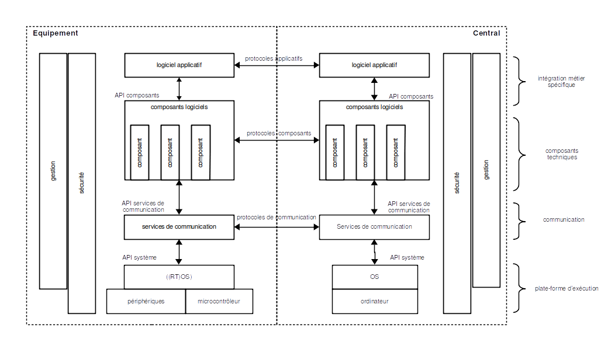
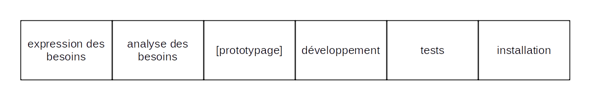
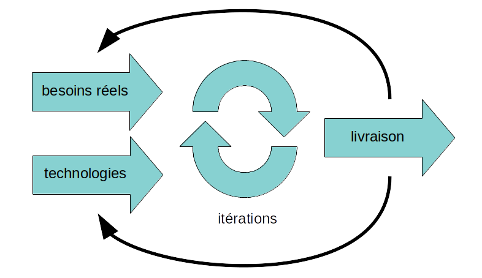
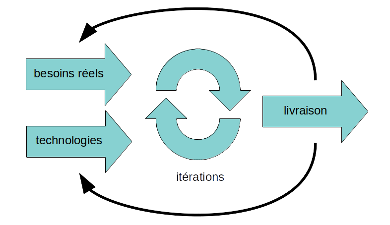

Objets Connectés
Pascal Bodin

Historique du document
| Quand | Quoi |
|---|---|
| 12/02/2022 | indication de la navigation |
| 18/12/2021 | liens plates-formes |
| 11/12/2021 | section Standardisation |
| 13/11/2021 | améliorations mineures |
| 19/05/2021 | rôle de la mémoire virtuelle |
| 02/05/2021 | retours d'expériences |
| 14/04/2021 | familles de microcontrôleurs - développement logiciel |
| 05/03/2021 | ajout de comment naviguer, TP UDP |
| 24/02/2021 | ajout de liens vers TP STM32, ESP32 et Bluetooh LE |
| 22/11/2020 | version 1.0 |
Cette présentation est mise à disposition selon les termes de la Licence Creative Commons Attribution - Pas d’Utilisation Commerciale - Partage dans les Mêmes Conditions 4.0 International.
Vous pouvez la soutenir :
Crédits
- reveal.js - Copyright (C) 2020 Hakim El Hattab
- Freepik from www.flaticon.com
- material.io
- Matomo
Comment naviguer
- utiliser les flèches droite et gauche (en bas à droite) pour naviguer de chapitre en chapitre
- dans un chapitre, utiliser les flèches bas et haut

Sommaire
Avant-propos
Introduction
Exemple fil rouge
Equipement connecté
Positionnement
Communications
Architecture
Sécurité
Standardisation
Gestion de projets
Conclusion
Travaux pratiques
Avant-propos
Qui suis-je ?
-
mi-temps : consultant indépendant - objets connectés

- mi-temps : ingénieur logiciel sénior
 - nommé Orange Expert
- nommé Orange Expert
- premier projet objets connectés en 1990
Plus d'information
Point de vue de l'intégrateur
- livrer à une date donnée, pour un budget donné
- livrer un système qui fonctionne
- parfois : intégrer un système pré-existant
- réaliser un système maintenable
- cible : satisfaction du client
- résoudre des problèmes techniques est seulement un moyen
Type de systèmes ?
- systèmes grand public
- systèmes métiers
systèmes grand public- systèmes métiers
Systèmes métiers :
- richesse fonctionnelle
- complexité technique
- plus de contraintes (temps réel, sécurité, maintenabilité, etc.)
franglais
- dans la mesure du possible : utilisation du français
- si le mot français est rarement utilisé : mot anglais
Introduction
(Très rapide) historique
Avant les années 90
SCADA (Supervisory Control And Data Acquisition)
Années 90
M2M (Machine to Machine) LBS (Location Based Services)
Années 2000
IoT (Internet of Things)
Années 2010
- Smart Agriculture
- Smart City
- Smart Environment
- Smart Health
- Smart Industry
- Smart Utilities
- ...
Une définition ?
L'Internet des objets ou IdO (en anglais (the) Internet of Things ou IoT) est l'interconnexion entre l'Internet et des objets, des lieux et des environnements physiques.
L'objet de cette présentation
les systèmes dans lesquels des objets sont connectés à des applications distantes
⇒ plus large que la définition ci-dessus
Inventeur de l'acronyme IoT
Kevin Ashton - 1999
A retenir
- pas de vraie définition - domaine trop vaste
- systèmes existants bien avant l'acronyme IoT
- grande diversité des besoins utilisateurs
- différents domaines techniques
Exemple fil rouge
Les besoins exprimés
- surveiller un convoi de 5 véhicules traversant l'Europe
- émission d'une alarme quand :
- la distance entre deux véhicules consécutifs devient trop grande
- un conducteur appuie sur un bouton d'urgence
- sur déclenchement d'alarme :
- indication de l'origine de l'alarme au centre de supervision
- affichage en temps réel des positions de chaque véhicule jusqu'à la fin de l'alarme
- lever de doute en audio
- la couverture en extérieur doit être globale
Questions sur les besoins
- ordre de grandeur de la distance inter-véhicule ?
- cette distance limite doit-elle pouvoir être modifiée ?
- quelle précision ?
- comment sont gérées les contraintes du trafic ?
- délai de réception de l'alarme ?
- procédure d'arrêt de l'alarme ?
- installation et alimentation des équipements internes ?
- limitations sur les équipements externes (antennes) ?
- etc.
Les domaines techniques
- distance entre véhicules : capteurs, GNSS...
- déclenchement manuel alarme : capteur
- transmission alarme : réseaux sans-fil
- équipements embarqués
- affichage positions : GNSS, SIG...
- couverture globale : réseau mobile terrestre, satellite...
- confidentialité, intégrité, disponibilité
- logiciel
- etc.

Comprendre les vrais besoins utilisateurs peut être difficile. Mais c'est la clé du succés.
Comprendre les vrais besoins utilisateurs peut être difficile. Mais c'est la condition du succés.
nous allons voir en détails tous ces éléments...
Equipement Connecté
Positionnement
Notre exemple
- position sur alarme
- distance entre deux véhicules :
- position de chaque véhicule
- échange des positions
- calcul de la distance
- question : quelle précision ?
GNSS (Global Navigation Satellite System)
Principe :
- constellation de satellites
- chaque satellite émet des messages
- récepteur en écoute, à l'endroit dont on doit connaître la position
- messages contenant heure et position satellite
- heure satellite très précise (horloge atomique)
- avec 3 satellites : estimation position
- avec 4ème satellite : synchro horloge récepteur
- ⇒ position
- durée / distance : 1 m ⇔ 3,3 ns
- sources d'erreurs :
- position satellite : 2,5 m
- horloge satellite : 1,5 m
- perturbations atmosphère : 6 m
- la plus importante : trajets multiples (réflexions signaux satellites - canyons urbains)
Exemple exactitude Galileo

Les constellations
- GPS :
- USA
- démarré en 1973, opérationnel en 1993
- 30 satellites opérationnels en septembre 2020
- orbites : 20200 km (MEO)
- GLONASS :
- Russie
- démarré en 1976, opérationnel en 1995
- 24 satellites opérationnels en octobre 2020
- orbites : 19100 km (MEO)
- Galileo :
- Europe
- démarré en 1999, opérationnel en 2016
- 24 satellites opérationnels en octobre 2020
- orbites : 23200 km (MEO)
- BeiDou (北斗) :
- Chine
- démarré en 2000, opérationnel en 2020
- 30 satellites lancés de 2017 à 2020
- orbites : MEO, GEO et GSO
- NavIC :
- Inde
- système régional
- 8 satellites opérationnels en 2020
- orbites : GEO et GSO
- QZSS :
- Japon
- système régional
- 4 satellites opérationnels en septembre 2020
- orbites : QZO
Exactitude : exemple concret

Conditions :
- récepteur GPS + GLONASS de téléphone
- en 2017
- en intérieur, rez-de-chaussée, à 2 m d'une fenêtre
- une position toutes les 2 s pendant 15 min
- ⇒ plusieurs positions à plus de 60 m de la vraie position
Augmentation de l'exactitude
- diffusion de corrections au niveau régional

Diminution du temps d'acquisition
- temps d'acquisition de la première position (TTFF : Time To First Fix) peut être long
- pour le réduire : fourniture des almanacs et éphémérides au récepteur GNSS
- ces informations doivent être fournies à l'équipement
- terme historique : A-GPS (Assisted GPS)
Interfaçage avec un récepteur GNSS

- niveau physique : liaison série (tension carte ou V.28)
- niveau données :
- NMEA 0183 - non prévu initialement pour GNSS
- très souvent : protocoles propriétaires optimisés

Protocoles propriétaires :
- SiRF (Qualcomm)
- u-blox
- SkyTraq
- etc.
- la plupart des récepteurs sont multi-constellations
- qualité et placement de l'antenne importants
- facile de dégrader la réception
Positionnement par infrastructure fixe
- trilatération : plusieurs mesures de distances par mesures de temps (comme GNSS)
- triangulation : plusieurs mesures d'angles
- zone de l'antenne de réception ("cellule")
- balises (beacons) pour détection de proximité
Navigation à l'estime (dead reckoning)
- position initiale connue
- suivi précis du trajet par capteurs (gyroscope, accéléromètre, magnétomètre...)
- filtrage et fusion des données des capteurs
- resynchronisation périodique
En intérieur
- les technologies présentées peuvent fonctionner (plus ou moins bien) en intérieur
- installation d'infrastructure souvent nécessaire
Notre exemple
- a priori, alimentation électrique disponible dans les véhicules
- ⇒ pas de contrainte liée à l'autonomie
- calcul de distance entre véhicules semble pouvoir reposer sur du GNSS
- où positionner l'antenne GNSS ? comment passer le câble ?
A retenir
- GNSS, pas GPS 🙂
- la précision augmente
- le temps d'acquisition diminue
- la consommation d'énergie diminue
- mais encore difficile aujourd'hui de positionner tout le temps et partout
- ne pas confondre positionner et localiser (sous-entendu : à distance)
Communications
Notre exemple
- transmettre une alarme vers le centre de supervision
- lever de doute en audio
- suivi temps réel
- couverture globale
- communications entre véhicules
Préambule
- certaines des informations qui suivent ne concernent que l'Europe, voire que la France
- l'équivalent existe dans le reste du monde, avec variations en techno et en réglementation
Réseaux mobiles terrestres
Vue d'ensemble
- 1G : années 80 - réseaux analogiques
- 2G : années 90 - passage au numérique
- voix, données, SMS
- GSM/GPRS, EDGE, CDMAOne, PDC, iDEN, IS-136, D-AMPS
- 3G : années 2000
- évolution GSM/GPRS, CDMA2000 1X/EVDO, UMTS-HSPA+
- 4G : années 2010
- LTE Advanced
- 5G : années 2020
- réseaux de communication partagés entre tous les utilisateurs
- peu (ou pas) de gestion de priorités
- les opérateurs visent à couvrir une population, pas un territoire
- impossible d'adapter la couverture à un besoin spécifique
- utilisent des bandes de fréquence soumises à autorisation
Services de données
SMS (Short Message Service)
- 140 octets, ou 160 caractères à 7 bits, ou 70 caractères UCS2
- concaténation possible
- pas d'acquittement de bout-en-bout
- latence : peut être très élevée (plusieurs heures)
- intérêt : envoi de données VERS un mobile
Données par paquets
- utilisation des protocoles de l'Internet (IP, TCP, UDP, etc.)
- des limitations peuvent exister, selon l'abonnement (protocoles, ports)
- 2G :
- GPRS (General Packet Radio Service) - 2,5G
- fermetures des réseaux déjà faites, en cours ou à venir
- 3G :
- zone rurale : au moins 144 kb/s - max 384 kb/s, max 500 km/h
- zone urbaine : au moins 384 kb/s - max 512 kb/s, max 120 km/h
- proche : au moins 2 Mb/s, max 10 km/h
- 4G :
- 100 Mb/s downlink, 50 Mb/s uplink
- optimisé pour les vitesses lentes, mais support vitesses rapides max 500 km/h
- services données historiquement prévus pour :
- échange de courriels
- visite de sites web
- visionnage ou transmission de vidéos
- besoins et contraintes spécifiques des équipements connectés :
- courts messages, peu fréquents
- souvent : autonomie en énergie
- souvent : bas coût
- en réponse à ces besoins : LPWAN (Low Power Wide Area Network)
- NB-IoT (Narrowband IoT)
- LTE-M (Long Term Evolution - Category M1) (LTE = 3G → 4G)
- autres technologies de LPWAN (hors réseaux mobiles terrestres) : voir plus loin

- PSM (Power Saving Mode) : diminution de la signalisation
- eDRX (Extended Discontinuous Reception) : extinction du récepteur une partie du temps
- HLCom (High Latency Communications) : tamponnage et signalisation pour PSM et eDRX
- Half Duplex Mode
- CE (Coverage Enhancement) : répétitions pour canaux données et contrôle
- etc.
- buts :
- 10 ans de fonctionnement sur pile
- terminal plus simple ⇒ coût plus faible
Caractéristiques
- débit : 1 Mb/s uplink et downlink
- latence : 10 ms à 4 s
- voix
- PSM (Power Saving Mode) : diminution de la signalisation
- eDRX (Extended Discontinuous Reception) : extinction du récepteur une partie du temps
- Coverage Extension : augmentation des niveaux de puissance et répétitions
- etc.
- buts :
- 10 ans de fonctionnement sur pile
- terminal plus simple ⇒ coût plus faible
Caractéristiques
- débit : jusqu'à 158 kb/s uplink et 124 kb/s downlink
- latence : 1,4 à 10 s
- pas de voix
Réseaux en activité (août 2020)
- LTE-M : 46 réseaux
- NB-IoT : 96 réseaux
- en France :
- LTE-M : Orange
- NB-IoT : SFR
Intégration d'un terminal réseau mobile
Deux grands types d'intégration :
- terminal séparé contrôlé par l'application
- le terminal embarque l'application
Terminal séparé

- niveau physique : liaison série (tension carte ou V.28)
- niveau données :
- "commandes AT"
- 3GPP TS 27.007
Format des commandes

Format des réponses
Commandes
- presque 300 commandes :
- gestion des appels voix
- gestion des services réseaux
- gestion des échanges de données
- informations sur le terminal
- etc.
- chaque fabricant ajoute ses propres commandes :
- GPIO
- système de gestion de fichiers
- sockets TCP et UDP
- FTP, HTTP, ping, CoAP, MQTT, LwM2M
- GNSS
- date et heure
- etc.
Modes de fonctionnement

- échange de données : nécessite l'activation d'un contexte PDP (Packet Data Protocol)
- sélection du réseau cible : APN (Access Point Name)
- Internet, intranet
- protocoles et ports autorisés
- etc.
Utilisation de PPP (Point to Point Protocol)

Utilisation d'une pile TCP/IP interne

Application dans le terminal/module
- souvent deux processeurs : "modem" et application
- API (Application Programming Interface) donnant accès aux services
- OS (Linux) ou RTOS (Thread-X, etc.)

Réseaux LPWAN en fréquences non soumises à autorisation
Certaines fréquences sont utilisables sans licence.
Réglementation
- recommandations internationales (ITU, CEPT, etc.)
- réglementations nationales
- concernent tous fréquences sous licence également
⇒ fréquences ISM (Industrial, Scientific and Medical)
- initialement assignées aux usages autres que télécommunications
- maintenant utilisées pour Wi-Fi, Bluetooth, Zigbee, etc.
- tolérance aux interférences requise
- 6,7 MHz - 13 MHz - 27 MHz - 40 MHz - 433 MHz - 915 MHz - 2,4 GHz - 5,8 GHz - 24 GHz - 61 GHz - 122 GHz - 245 GHz
⇒ SRD (Short Range Devices)
- faible capacité à provoquer des interférences avec autres équipements radio
- en cas d'interférence : non protégés par la réglementation
- utilisation des fréquences ISM et de fréquences additionnelles (868 MHz, etc.)
- limitation de la puissance : 1 à 500 mW e.r.p. selon fréquences
- éventuelle limitation temps d'émission (duty cycle) : 1% à 0,001% selon fréquences
Deux grands types de réseaux LPWAN
- réseau Sigfox
- réseaux utilisant la technologie LoRaWAN

Radio :
- transmission asynchrone du terminal vers le réseau
- message répété 3 fois sur 3 fréquences
- UNB (Ultra Narrow Band)
- modulations DBPSK (Differential Binary Phase Shift Keying) et GFSK (Gaussian Frequency Shift Keying)
- technologie propriétaire
- fréquences : 862 à 876 MHz, 902 à 928 MHz, selon régions
- largeur de bande : 100 Hz
- débit : 100 b/s ou 600 b/s, selon régions
Charge utile d'un message :
- uplink : 12 octets
- downlink : 8 octets
- limitation du nombre de messages par jour et par terminal
Couverture

- attention : carte de présence par pays, pas carte de couverture

Radio : LoRa
- étalement de spectre basé sur CSS (Chirp Spread Spectrum)
- correction d'erreur dans la couche physique
- technologie propriétaire
- largeur de bande :
- uplink : 125 kHz ou 500 kHz
- downlink : 500 kHz
- facteurs d'étalement orthogonaux
- débit adaptable aux conditions radio
- uplink : 980 b/s à 12500 b/s
- downlink : 980 b/s à 21900 b/s
LoRaWAN
- protocole de communication + architecture système
- ⇒ réseaux et terminaux LoRaWAN interopérables


Classes de terminaux
- classe A : communication initiée par l'équipement - puis deux fenêtres successives de réception
- classe B : classe A + fenêtres de réception périodiques synchronisées
- classe C : réception ouverte en permanence en-dehors des émissions
Charge utile
- 51 à 222 octets, selon débit
- le débit peut être adaptatif ⇒ taille charge utile variable
Réseaux

- attention : carte de présence par pays, pas carte de couverture
- 148 opérateurs dans 162 pays
- en France :
- Objenious (Bouygues Telecom)
- Orange
- réseaux communautaires :
- il est aussi possible d'installer son propre réseau
Réseaux satellitaires
Orbite géostationnaire (GEO - Geosynchronous Equatorial Orbit)
- 36000 km d'altitude
- semble fixe par rapport à la Terre
- couverture restreinte à la zone "sous" le satellite
- latence de bout en bout minimale : 2 x 36000 km / 300000 km/s ⇒ 240 ms

- BGAN M2M
- IP - jusqu'à 448 kb/s
- latence : > 800 ms
- couverture : presque globale
- IsatM2M
- messages de 10 ou 25 octets (TX) ou 100 octets (RX)
- latence : 30 à 60 s
- couverture : presque globale
- IsatDataPro
- message de 6400 octets (TX) ou 10000 octets (RX
- latence : 15 à 60 s
- couverture : presque globale

- différents services de données
- couverture : 2/3 du globe
Orbite basse (LEO - Low Earth Orbit)
- en-dessous de 2000 km d'altitude
- (rayon de la Terre : environ 6400 km)
- (ISS : entre 330 et 420 km d'altitude)
- période : de 80 à 130 min
- latence : souvent plus élevée (stockage et transfert...)
- puissance d'émission du terminal plus faible
Acteurs "anciens" :
Nouveaux acteurs :
Réseaux PMR (Professional/Private Mobile Radio)
Informations pour la France
Réseaux PMR :
- réseaux indépendants
- à destination des professionnels, de services de l'Etat, des hôpitaux, des collectivités locales, d'établissements publics
- la voix est la première fonction
- couverture locale ou régionale
- bandes de fréquences soumises à licence (payante) :
- 29-54 MHz
- 54-68 MHz
- 68-87 MHz
- 146-174 MHz
- 174-230 MHz
- 406-430 MHz
- 440-470 MHz
- gestion : Agence Nationale des Fréquences (ANFR)
Technologies
- il existe encore des réseaux analogiques (voix - données possibles)
- en numérique :
 (Digital Mobile Radio) :
(Digital Mobile Radio) :
- TDMA (Time Division Multiple Access) sur 12,5 kHz ou 6,25 kHz
- jusqu'à 9600 b/s débit brut
- messages courts et UDP/IP
 (Digital Private Mobile
Radio) :
(Digital Private Mobile
Radio) :
- FDMA (Frequency Division Multiple Access) sur 6,25 kHz
- jusqu'à 4800 b/s débit brut
- messages courts
- permettent :
- les échanges terminal à terminal
- le trunking (partage entre plusieurs groupes d'utilisateurs)
FDMA - TDMA

En numérique (suite) :
 (TErrestrial Trunked RAdio) :
(TErrestrial Trunked RAdio) :
- pour réseaux partagés entre groupes d'utilisateurs (trunking)
- SDS (Short Data Service) - messages jusqu'à 256 octets
- messages de statut
- données en mode circuit
- données en mode paquets (IP) - maximum 14 Kb/s
- TEDS (TETRA Enhanced Data Service) : permet la vidéo
En numérique (suite) :

- pour réseaux partagés entre groupes d'utilisateurs (trunking)
- SMS (Short Message Service)
- messages de statut
- données en mode paquets (IP)
- réseaux peu connus du grand public mais très nombreux :
- en 2018, 25000 réseaux PMR en France
- conviennent aux applications à couverture locale ou régionale
- avantages :
- la couverture peut être adaptée à l'application
- utilisation exclusive des fréquences (hors trunking)
- protection légale contre les brouillages
Communications radio courte distance

- basé sur le standard IEEE 802.11
- réseau local sans fil (WLAN - Wireless Local Area Network)
- fréquences ISM : 2,4 GHz et 5,8 GHz
- 802.11g : jusqu'à 54 Mb/s - standards ultérieurs permettent plus
- portée : environ 100 m
- récemment, Wi-Fi HaLow (802.11ah) pour l'IoT :
- fréquences ISM : 915 MHz
- portée : environ 1 km
- bonne pénétration dans les bâtiments (bande étroite)
- faible consommation
- fréquences ISM : 2,4 GHz
- deux modes radio :
- LE (Low Energy) - jusqu'à 2 Mb/s - point à point, diffusion, maillage
- Classic - jusqu'à 3 Mb/s - point à point
- portée : More than a kilometer. Less than a meter. - attention à la réglementation !
TP : messages Bluetooth
réception et décodage de messages émis par un équipement Ruuvi
Eléments:


- un équipement Ruuvi
- nœud de capteurs libre (matériel et logiciel)
- capteurs humidité + pression + température
- accéléromètre
- Bluetooth Low Energy
- un ESP32-DevKitC - une carte basée sur l'ESP32, un microcontrôleur Wi-Fi et Bluetooth

- fréquences ISM : 2,4 GHz et 868 MHz en Europe, 915 MHz aux USA
- réseau maillé auto-organisé
- plusieurs centaines de nœuds sur un même réseau
- type de nœuds : coordinateur, routeur, équipement terminal
- débit : 250 kb/s
- portée : 300 m en vue directe, 75 à 100 m en intérieur
- faible consommation
- fréquences SRD/ISM : 868 MHz en Europe, 915 MHz aux USA
- réseau maillé
- jusqu'à 232 nœuds sur un même réseau
- débit : jusqu'à 100 kb/s
- portée : 100 m en vue directe
- faible consommation
Z-Wave Long Range
- annoncé en décembre 2020
- devrait permettre des distances de plusieurs km
- devrait supporter jusqu'à 4000 nœuds sur un même réseau
Protocole propriétaire spécifique
- vous pouvez développer votre propre protocole, ou utiliser un protocole propriétaire existant
- vous devez respecter la réglementation locale
Notre exemple
- couverture globale ⇒ réseaux satellitaires
- temps de latence court pour transmission alarme ⇒ constellation GEO
- pour encore diminuer le temps de latence : réseaux mobiles 3G/4G lorsque disponibles
- échange des positions entre véhicules pour calcul distance :
- communications courte distance
- au moins deux bandes de fréquences pour lutter contre brouillage
- protocole propriétaire pour sécurité
A retenir
- différencier standard ou norme / technologie radio / réglementation / opérateur :
- une technologie peut être utilisée sur des fréquences différentes (ex.: réseaux 4G privés)
- un standard ou norme peut proposer des services qui ne seront pas mis en place par un opérateur donné
- une même techno peut être proposée par plusieurs opérateurs
- les fréquences ISM/SRD vont-elles saturer un jour ?
- il est possible d'installer et de gérer son propre réseau (PMR)
- il peut être nécessaire d'intégrer plusieurs technologies
- attention : avec la radio, la perte de données est certaine
Echanges de données
Flux ou messages ?
- capteurs : quelques (dizaines d')octets
- valeur mesurée
- identifiant
- date et heure
- position
- etc.
- actionneurs : quelques (dizaines d')octets
- commande à exécuter
- identifiant
- etc.
- ⇒ messages
- voix : flux
- vidéo : flux
- images : (gros) messages
Nous allons nous intéresser aux messages. La transmission de la voix ou de la vidéo est plus rare, bien que parfois nécessaire (comme dans notre exemple).
Pourquoi des messages ?
- l'application destinataire doit savoir quand toute l'information relative à une mesure d'un capteur a été reçue
- un actionneur doit savoir quand toute l'information relative à la commande qu'il doit effectuer a été reçue
Qu'est-ce qu'un message ?
- une suite d'octets contenant la totalité de l'information nécessaire à un traitement donné
Technologies avec interfaces de type message
- UDP/IP
- SMS (réseaux mobiles terrestres)
- LoRaWAN, Sigfox
- messages sur réseaux satellitaires
- messages sur réseaux PMR
- etc.
Interface de type message

Interface de type flux

Attention !
TCP/IP est de type flux !
Retour à la liaison série
- comment étaient construits les messages d'un récepteur GNSS ?
- comment étaient construites les commandes AT et les réponses ?
- ⇒ utilisation de délimiteurs (début, fin)
Solutions générales pour un cas simple
- on suppose :
- pas d'erreur (perte, modification)
- transmission des données respectant l'ordre
- solution 1 : le temps
- attendre une durée minimale entre deux messages
- durée entre deux octets successifs d'un même message doit être inférieure à la durée entre messages
- la durée entre deux messages doit être supérieure à la gigue du réseau
- solution 2 : une délimitation
- séquence de début spécifique
Problèmes avec le contenu du message
Problème 1
- supposons que l'on utilise la solution 2, avec l'octet de valeur 01 comme délimiteur :
- question : comment transmettre la valeur 01 dans un message ?
- c'est le problème de la transparence

Problème 2
L'entier 32 bits 11223344 peut être stocké en mémoire de deux façons :
- question : comment transmettre un entier de 32 bits entre deux processeurs utilisant chacun la mémoire de façon différente ?
- c'est le problème du boutisme (endianness)
Vocabulaire :
- gros-boutisme (big-endianness) : octet de poids fort à l'adresse la plus basse
- petit-boutisme (little-endianness) : octet de poids faible à l'adresse la plus basse
- bi-boutisme (bi-endianness) : les deux sont possibles
- gros-boutistes : microprocesseurs 68000, microcontrôleurs AVR32, etc.
- petits-boutistes : RISC-V, microprocesseurs x86, etc.
- bi-boutistes : cœurs Arm, Alpha, etc.
Problème 3
Comment échanger des structures de données entre ordinateurs ?
struct sensor {
uint32_t sensor_id;
char sensor_name[20];
struct {
double latitude;
double longitude;
} location;
};
- généralisation du problème du boutisme
- c'est le problème de la sérialisation
Pour ces problèmes (délimitation, transparence, boutisme, sérialisation) :
- plus ou moins compliqué de définir sa propre solution
- si pas d'expérience préalable, choisir une solution existante !
Sérialisation, boutisme et délimitation
- ASN.1 (Abstract Syntax Notation number 1):
- maintenu par l'ITU
- notation permettant de définir des structures de données indépendamment de l'encodage utilisé pour les transmettre
- règles d'encodage standard associées (BER, PER, etc.)
- générateurs de code pour de nombreux langages
- auto-délimitant
Sérialisation et boutisme
- Protocol Buffers :
- développé par Google (qui ne devait pas connaître l'existence d'ASN.1...)
- générateur de code pour de nombreux langages
- nécessite une délimitation, à l'inverse d'ASN.1
Sérialisation, boutisme et délimitation
- CBOR (Concise Binary Object Representation) :
- définie par l'IETF - RFC 7049
- basé sur JSON
- pas besoin de délimitation
- librairies disponibles pour de nombreux langages
Sérialisation, boutisme et délimitation
Pour besoin précis et spécifique : assez facile de définir son propre formatage
Communication (+ délimitation et transparence)
- MQTT :
- origine acronyme : Message Queuing Telemetry Transport
- mais n'utilise pas de mécanisme de file de message, et n'est pas restreint au transport de mesures
- nécessite une couche transport de type flux, ordonné et sans perte (TCP)
- mélange protocole message et mécanisme de publication/abonnement
- une version non TCP (pour Zigbee, etc.) existe
- standard OASIS Open
- plusieurs implémentations libres
Communication (+ délimitation et transparence)
- CoAP :
- Constrained Application Protocol
- même modèle que HTTP : requêtes portant sur ressources
- prévu pour UDP
- standard IETF - RFC 7252
- nombreuses implémentations libres
Communication (+ délimitation et transparence)
- de nombreux systèmes utilisent leurs propres protocoles (propriétaires)
- beaucoup de communication sur MQTT et CoAP, mais difficile de déterminer leur réel taux d'utilisation
- sur TCP, pas très compliqué de définir son propre protocole, plus léger que MQTT
- sur UDP (plus généralement : transport de messages avec perte) : plus compliqué
TP : UDP sur Wi-Fi
Eléments :
- un ESP32-DevKitC
- un point d'accès Wi-Fi
- un ordinateur sous Linux ou macOS, adressable depuis le point d'accès Wi-Fi
TP :
- une application tournant sur l'ESP32-DevKitC se connecte au point d'accès
- un serveur UDP très simple est démarré sur l'ordinateur
- l'application envoie des messages au serveur en utilisant des datagrammes UDP
Intégration à l'Internet
- réseaux Sigfox, LoRaWAN, etc : courts messages
- les en-têtes protocolaires de l'Internet (TCP/UDP/IP) sont trop longs
- ⇒ les équipements connectés à ces réseaux ne sont pas intégrés à l'Internet
Une solution : SCHC
Static Context Header Compression - RFC 8724
- sur réseaux LPWAN, la nature des flux est prédictible
- ⇒ stockage du contexte dans l'équipement et dans le réseau
- ⇒ très fort niveau de compression des en-têtes possible

Notre exemple
- pour messages sur réseaux satellitaires : définir un protocole spécifique
- pour réseaux mobiles terrestres, en TCP : définir un protocole spécifique
- pour communication entre véhicules : définir un protocole spécifique
- la vraie complexité est dans l'intégration : gérer plusieurs réseaux
- intégration IP avec SCHC
A retenir
- le protocole dépend de la couche de transport (avec ou sans perte)
- nécessité de délimiter les messages sur un transport de type flux (TCP)
- décider de l'utilisation d'un protocole existant selon l'expérience, les besoins et le contexte
- contrainte souvent forte : taille du code en embarqué
- avec SCHC, usage d'IP dans tous les équipements ⇒ véritable Internet des Objets
Architecture
Distribution des traitements
- des fonctions de l'équipement communiquent avec des fonctions distantes (application distribuée)
- plusieurs types de réseaux, avec des caractéristiques différentes
- de nombreux cas d'usage possibles
- ⇒ architecture à couches
Architecture à couches
- vision idéale !
- avantages :
- séparation des préoccupations (separation of concerns)
- migration d'un type de réseau à un autre facilitée
- réutilisation des composants techniques dans d'autres systèmes
- maintenance facilitée
- etc.
Plates-formes
Groupe générique de couches permettant :
- l'abstraction de la couche communication
- la fourniture d'une partie des services de gestions (des utilisateurs et des équipements)
- la fourniture d'une partie de la sécurité
- certains composants techniques complexes (analyse de données, apprentissage automatique, etc.)
- la montée en charge
- l'hébergement de l'ensemble de ces services

Contrairement à ce que l'on pourrait penser, il existe de très nombreuses plates-formes...
AggreGate
AirVantage
Akenza
Altair SmartWorks
Arduino IoT Cloud
Arkessa
AskSensors
Atmosphere
Avimesa.Live AWS IoT
Ayla Networks
balenaCloud
Beebotte
Blynk
Bolt
Bosch IoT Suite
Plates-formes à implémentation libre (open source)
Avantages d'une plate-forme :
- possibilité d'avoir très rapidement un système complet
- passage à l'échelle (> 1000 équipements ?)
- peut éviter d'avoir à développer des composants techniques complexes
Inconvénients d'une plate-forme :
- peut rendre plus complexe le développement d'un système
- peut introduire des problèmes de fiabilité non maîtrisés
- généricité ⇒ peut freiner le développement de systèmes sur mesure
- mutualisation ⇒ peut obliger à des évolutions non désirées
Sécurité
Objectifs
- confidentialité
- intégrité
- disponibilité
(en anglais : CIA (confidentiality, integrity, availability))
Surface d'attaque
Ensemble des éléments qu'un attaquant peut utiliser pour attaquer un système.

Comment faire face
- gouvernance de la gestion :
- désigner un responsable en charge de la sécurité
- sécurité par conception :
- concevoir dès le départ matériel et logiciel par rapport à la sécurité
- utilisation correcte du chiffrement :
- suivre les meilleurs standards et les bonnes pratiques
- sécurisation réseau(x) et applications :
- sécuriser les applications, les interfaces, les serveurs
- sécurisation chaîne de production et chaîne d'approvisionnement :
- surveiller les processus de fabrication, de livraison et d'installation
- sécurité des utilisateurs :
- informer le client des vulnérabilités, fournir des mises à jour, etc.
A retenir
- la sécurisation à apporter dépend de l'application
- toutefois, ne pas sous-estimer - exemple : température dans une maison peut indiquer l'absence des occupants
- nécessite une vue d'ensemble
- demande de l'expérience
Standardisation
Aujourd'hui :
- Presque tous les systèmes à objets connectés sont des systèmes fermés :
- l'application de l'équipement échange des informations avec seulement une application centrale
- l'intégration des équipements d'un autre constructeur est habituellement complexe ou impossible
- l'intégation de fonctions d'un développeur tiers est habituellement complexe ou impossible
- l'intégration d'un nouveau type de réseau par un tiers est complexe ou impossible
- l'intégration d'un nouveau type de réseau est complexe
- etc.
Comment lever ces contraintes ?
La standardisation peut aider :
- protocoles de communication
- interfaces réseau
- architectures systèmes
- structure de données
- sémantique des données
- etc.
Quelques standards préexistants :
- V.24, V.28, TIA-232 (ex-RS-232), etc. pour les liaisons série
- I2C, CAN, etc. pour les bus série
- commandes AT pour les terminaux des réseaux cellulaires
- Wi-Fi, Bluethooth, etc. pour les communications sans-fil courte distance
- IPv4, IPv6, TCP, UDP, etc. pour l'Internet
- etc.
Note : certains sont des normes
Des standards additionnels sont requis, principalement pour les couches hautes...
- Mission :
- We are the global community that develops IoT standards to enable interoperable, secure, and simple-to-deploy services for the IoT ecosystem. oneM2M standards are open, accessible and internationally recognized.
Proposition de valeur :
OneM2M standards allow any IoT application to discover and interact with any IoT device.
Architecture fonctionnelle

AE : Application Entity - CSE : Common Services Entity - NSE : Network Services Entity
Les standards OneM2M sont transposés par l'ITU-T.
Il existe quelques implémentations libres (open source).
Membres :
- Organismes d'élaboration de normes (SDO : Standards Development Organizations) :
- Deux forums/consortiums industriels :
- Membres des SDOs
Study Group 20
- Mission :
- Address the standardization requirements of Internet of Things (IoT) technologies, with an initial focus on IoT applications in smart cities and communities (SC&C)
L'Union Internationale des Télécommunications (UIT):
- fondée en 1865
- agence des Nations Unies spécialisée dans le domaine des télécommunications, et des technologies de l'information et de la communication (ICTs)
Pour le secteur des télécommunications - UIT-T :
- étudie les questions techniques, opérationnelles et tarifaires
- édite des Recommandations, avec comme objectif une standardisation au niveau mondial
Rôles du Study Group 20 :
- mène un groupe d'étude sur l'Internet des Objets et ses applications
- mène un groupe d'étude sur les villes et les communautés intelligentes, incluant les services électroniques et les services intelligents
- mène un groupe d'étude sur l'identification pour l'Internet des Objets
Recommandations UIT-T sous responsabilité SG20 :
- série F : services de télécommunication non téléphoniques
- série H : systèmes audiovisuels et multimédias
- série L : environnement et TIC, changement climatique, déchets d'équipements électriques et électroniques, efficacité énergétique; construction, installation et protection des câbles et autres éléments des installations extérieures
- série Q : commutation et signalisation et mesures et tests associés
- série Y : infrastructure mondiale de l'information, protocole Internet, réseaux de prochaine génération, Internet des objets et villes intelligentes
Les normes OneM2M sont transposées dans la série Y.4500 (17 Recommandations)
Nombreuses autres Recommandations :
- Y.4000 - Présentation générale de l'Internet des objets
- Y.4003 - Aperçu de la fabrication intelligente dans le contexte de l'Internet des objets industriel
- Y.4100 - Exigences communes relative à l'Internet des objets
- Y.4102 - Exigences relatives aux dispositifs de l'Internet des objets utilisés pour mettre en œuvre les applications de l'Internet des objets lors des catastrophes
- Y.4103 - Exigences communes pour les applications de l'Internet des objets
- Y.4111 - Exigences et cadre sémantiques de l'Internet des objets
- Y.4112 - Exigences pour la capacité de plug and play dans l'Internet des objets
- Y.4401 - Cadre fonctionnel et capacités de l'Internet des objets
- Y.4480 - Low power protocol for wide area wireless networks (LoRaWAN)
- etc.
Modèle de référence
Exemple - Véhicules en réseau et infrastructures ITS
Membres: 193 états et plus de 900 entreprises, universités, instituts de recherche et organisations internationales et régionales
Internet of Things Directorate
- Mission :
- Coordination within the IETF on IoT-related work, and increasing the visibility and communication between IETF IoT activities and other SDOs, industry alliances, and other organizations.
L'IETF (Internet Engineering Task Force) :
- large open international community of network designers, operators, vendors, and researchers concerned with the evolution of the Internet architecture and the smooth operation of the Internet.
RFCs (à l'origine : Request For Comments):
- RFC7252: The Constrained Application Protocol (CoAP)
- RFC8520: Manufacturer Usage Description Specification
- RFC8576: Internet of Things (IoT) Security: State of the Art and Challenges
- RFC8724: SCHC: Generic Framework for Static Context Header Compression and Fragmentation
- RFC8949: Concise Binary Object Representation (CBOR)
- RFC9006: TCP Usage Guidance in the Internet of Things (IoT)
- RFC9019: A Firmware Update Architecture for Internet of Things
- etc.
Web of Things
- Mission :
- By providing standardized metadata and other re-usable technological building blocks, W3C WoT enables easy integration across IoT platforms and application domains.
Le W3C (World Wide Web Consortium) :
- international community where Member organizations, a full-time staff, and the public work together to develop Web standards.
Publications :
Blocs de base du Web des Objets

TD : Thing Description
De nombreuses autres organisations :
- Alliance for Internet of Things Innovation
- Connectivity Standards Alliance (ex-Zigbee Alliance)
- DDS Foundation
- Edge Computing Consortium Europe
- GlobalPlatform
- Industry IoT Consortium
- Internet of Things (IoT) Architecture Working Group from IEEE
- Linaro - IoT and Embedded
- LoRa Alliance
- Matter (en lien avec Connectivity Standards Alliance)
- mioty alliance
De nombreuses autres organisations (suite) :
Question : tant de standards ! Qu'en faire ?
Réponse : ce que vous voulez 🙂
Plus sérieusement :
- restez informé(e)
- écoutez vos clients
- utilisez des architectures en couches avec des interfaces bien définies
Gestion de projets
Projet industriel habituel
Projet objets connectés
- s'assurer des vrais besoins des utilisateurs
- se préparer à l'intégration des technologies nécessaires
- développer de l'outillage spécifique pour le développement et les tests
Problèmes
- un système objets connectés peut transformer la façon de travailler du client
- le client n'est peut-être pas capable de prévoir cette transformation
- certaines technologies à intégrer peuvent ne pas être maîtrisées
- certaines technologies à intégrer peuvent ne pas être encore mûres
- certaines technologies à intégrer peuvent vieillir rapidement
- etc.
Elément de solution : être agile
Valoriser :
- les individus et leurs interactions plus que les processus et les outils
- des logiciels opérationnels plus qu’une documentation exhaustive
- la collaboration avec les clients plus que la négociation contractuelle
- l’adaptation au changement plus que le suivi d’un plan
Ce manifeste, pensé pour le développement logiciel, peut apporter de très bons résultats à des projets autres que logiciels.
Rester agile en s'inspirant de ce manifeste ! 🙂
 

A chaque itération :
- les besoins des utilisateurs sont mieux définis (y compris par le client)
- les composants techniques sont mieux maîtrisés
- le système se construit sur des bases solides
- le client voit l'avancement du développement
A propos de bases solides :
- prévoir dès la conception les pertes de connectivité
- séparer les difficultés : preuves de concepts distinctes
- tester l'élasticité (la résistance à la tension)
- décomposer en couches (voir architecture)
- s'assurer de la solidité d'une couche avant de construire dessus
- développer des tests automatisés (validation et non régression) au fur et à mesure
Développement par itérations :
- utilisable même dans le cas de réponse à appel d'offres (le proposer au client !)
- bénéfice pour le client et pour l'intégrateur
- être agile est bien plus important que de respecter un plan de bout en bout !
Pour un projet objets connectés
- prototyper et présenter aux utilisateurs (pas seulement au client)
- tester sur le terrain le plus rapidement possible
- prévoir, si possible, des mises à jour OTA (Over The Air)
- utiliser du matériel avec possibilité d'extensions
- utiliser du matériel plus puissant que strictement nécessaire
- etc.
Etudes de cas
Tournées de collecte de déchets ménagers

Demande :
- fournir quotidiennement les rapports des tournées de collecte des déchets ménagers de la
veille :
- points de collecte prévus et faits
- points de collecte prévus et non faits
- points de collectes non prévus et faits
- évènements divers : monstres, containers cassés, marche arrière, etc.
Analyse des besoins :
- le client pensait à un équipement embarqué remontant en temps réel les données sur réseau cellulaire
- mais pas de demande de temps réel pour les rapports
Proposition :
- données de position enregistrées dans le véhicule
- données transmises en fin de journée par câble (!)
Gains :
- coût d'investissement plus faible (pas de module de communication dans l'équipement embarqué)
- coût de fonctionnement plus faible : pas d'abonnements réseau mobile
- ⇒ importance de la relation avec le client
- ⇒ séparer le fonctionnel du technique
Attribution de courses taxis
Demande :
- attribution d'une course taxi au taxi le plus proche
- surveillance entre taxis
- alarme agression
- connexion taximètre
- réservations
- etc.
Contexte :
- le groupe de taxis n'a aucune expérience d'un tel système
- ne connaît pas le nombre de courses par jour
- le fournisseur :
- ne connaît pas le métier de taxi
- se pose des questions sur certains points techniques
Proposition :
- mettre en place une première version minimale rapidement
- progresser ensuite par étapes
- changements fonctionnels en fonction de la prise en main
- planifier de faire évoluer le réseau radio selon le trafic
- ⇒ itérations pour permettre au client de mieux définir ses besoins
- ⇒ itérations pour permettre au fournisseur de bien prendre en main les composants techniques
- ⇒ itérations rendant visible l'avancement
Système d'Aide à l'Exploitation bus urbains

Demande :
- prise de service et fin de service conducteur
- affichage au conducteur de l'arrêt suivant et de l'heure d'arrivée prévue
- alarme au centre de supervision sur retard ou avance trop importants
- alarme agression
- consommation carburant par connexion au débimètre
- etc.
Contexte :
- les conducteurs peuvent se sentir surveillés par le système
- ⇒ risque de grève
Proposition :
- procéder par étapes
- livrer d'abord les fonctions utiles aux conducteurs :
- alarme agression
- messages courts entrants personnels (non prévus au départ)
- ⇒ déterminer les attentes des utilisateurs, pas seulement du client
- ⇒ livrer d'abord ce qui a le plus de valeur pour l'utilisateur
GPRS
Contexte :
- premier service de transmission de données par paquets sur réseau cellulaire GSM
- présenté par les opérateurs comme permettant de passer des réseaux fixes aux réseaux mobiles de façon transparente
Réalité :
- deux caractéristiques non documentées :
- fermeture de session TCP si pas d'échanges pendant n minutes
- fermeture du context radio toutes les n heures même si échanges
- pas un problème pour les développeurs habitués aux réseaux radio
- mais un vrai problème pour les autres (ex. : utilisation d'un routeur LAN)
- ⇒ lire la doc technique ne suffit pas, il faut tester
- ⇒ tenter de transporter dans un domaine les solutions d'un autre domaine peut être une mauvaise idée
- ⇒ intégrer la gestion des erreurs dès le départ
Sous-traitance de la réalisation d'un équipement embarqué
Contexte :
- besoin d'un équipement embarqué destiné à contrôler un émetteur-récepteur et un combiné audio/clavier
- réalisation sous-traitée à un grand équipementier radio
Résultat :
- livraison tardive
- des tests de charge exhibent une erreur de conception électronique et une bogue logicielle majeure
- délai trop court pour corriger l'électronique
- le code source est demandé
- un contournement logiciel est heureusement trouvé
- ⇒ tester l'élasticité au plus tôt
- ⇒ un grand groupe peut fort bien faire de la mauvaise qualité
- ⇒ avoir une vision globale (ici : matériel + logiciel)
Sous-traitance de la réalisation d'un équipement embarqué - suite
Contexte :
- demande d'un version corrigée de l'équipement
- l'équipementier propose un équipement qui permet également de répondre à d'autres clients
- ⇒ trop complexe
- ⇒ trop cher
Résultat :
- conception internalisée
- coûteux sur le court terme
- mais très bon retour sur investissement sur le long terme :
- parfaite adaptation aux besoins
- production adaptée à chaque client (carte d'extension, composants non montés)
- ⇒ dans un système à objets connectés, l'équipement connecté est le cœur technique : le maîtriser est nécessaire
- ⇒ cet exemple est assez ancien. Aujourd'hui, la conception aurait pu être dérivée d'une carte existante
Dysfonctionnement d'un équipement embarqué
Contexte :
- un millier d'équipements embarqués, installés dans des véhicules, cessent de fonctionner
- la fonction de mise à jour à distance (sur réseau cellulaire) ne fonctionne plus
- un audit de l'équipement est demandé
Résultat de l'audit :
- le logiciel est de très mauvaise qualité
- il a été écrit par un développeur sénior. Mais dont l'expérience est dans les applis web
- la fonction de mise à jour à distance écrit directement dans la mémoire la nouvelle
version reçue,
et sans contrôle de flux :
- si perte de couverture pendant la mise à jour, l'équipement a un logiciel incomplet
- si réseau trop rapide, perte de données ⇒ échec de la mise à jour
- ⇒ le chef de projet est en faute : il n'a pas assigné le bon profil à la tâche
- ⇒ le chef de projet n'avait pas le bon profil ⇒ son responsable est en faute
- ⇒ le développement logiciel n'est pas un monde monolithique : développer pour l'embarqué est différent de développer un frontal web, ce qui est différent de développer un dorsal applicatif...
Capteur autonome en énergie, avec remontées de données

Demande :
- concevoir un capteur de particules fines autonome en énergie
- le capteur doit remonter régulièrement les mesures vers une application distante
Réponse :
- carte électronique avec microcontrôleur basse consommation
- batterie rechargée par panneau solaire
- mais protocole de remontée des données très énergivore :
- données remontées en ASCII au lieu de binaire
- utilisation de FTP au lieu d'un protocole applicatif simple sur TCP ou même UDP
- le concepteur était plutôt bon en capteurs mais très moyen en protocoles de communication
- ⇒ savoir évaluer son niveau de compétence par domaine, pour savoir quand demander de l'aide
- ⇒ avoir une vision globale (matériel + logiciel)
Conclusion
- développer un système objets connectés peut être un défi :
- grande diversité des besoins utilisateurs ⇒ référence parfois difficile
- parfois difficile d'obtenir les vrais besoins des utilisateurs
- il faut maîtriser différents domaines technologiques
- peut-être plus que pour d'autres types de projets :
- passer du temps avec les utilisateurs (et pas seulement le client)
- anticiper la maîtrise des technologies nécessaires
- garder la vue d'ensemble
- être agile
- valoriser les profils en T
Mais c'est un domaine passionnant ! 🙂
Merci pour votre attention !